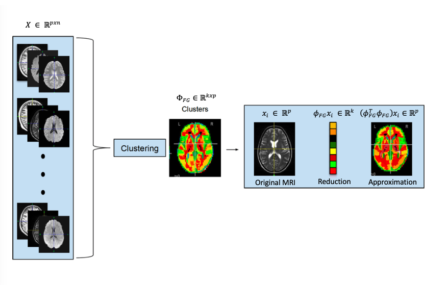
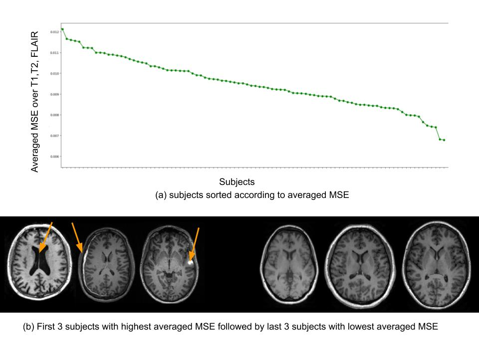

- Introduction -
Navigate the Github page to understand the concept of the project and use Github folder to check out the code (comming soon) and test it. The code will not be ready to run, you will need to obtain your data to run the program. The objective of this project is to develop an unsupervised machine learning technique to detect abnormal brain images from a dataset of images using least amount of preprocessing and computation. For group neuroimaging studies involving thousands of brain images, it is important to carefully identify and inspect such brain images before including them in the study. Typically, physicians/researchers examine the images manually to identify abnormalities, which is a tedious and laborious task for a large number of scans. Methods for efficient and accurate automation of this process are lacking and are necessary. We proposed a method based on recursive nearest agglomerative clustering in a population, we assume that the abnormal regions of the brain differ from patient to patient. Therefore, the summary of all brain images can reflect the healthy brain structure. To demonstrate the effectiveness of our approach, we used magnetic resonance imaging (MRI) images of 100 patients with traumatic brain injuries (TBI) from the tracktbi pilot dataset [6]
- Recursive Nearest Agglomeration -
Recursive nearest agglomeration (ReNA) is a fast hierarchical clustering algo- rithm for approximating data that contains structure[2]. ReNA fundamentally re- lies on feature grouping and nearest neighborhood graphs. For high-dimensional datasets, feature grouping is widely used in the feld of signal processing, pat- tern recognition, and computer vision for data approximation and feature selection [4]. In addition, applying feature grouping to high-dimensional data is a useful tool for reducing the complexity of computation and improving the stability of feature selection [3]. To apply dimensional reduction via feature grouping, we design a feature grouping matrix where corresponds to the number of clusters and p is the number of features/voxels. To obtain the re- duced version of sample/image we use equation 1 and for reconstructed version of the sample/image xi, we use equation 2.

ReNA uses nearest neighborhood graphs to design the feature grouping matrix that projects data into lower dimensional space. -nearest neighbor graphs tend to percolate for , therefore ReNA algorithm applies first nearest neighbor graphs recursively until the desired number of clusters is reached [3]. Overall ReNA has two stages. First, it starts by initializing the number of clusters k equal to the number of features/voxels p similar to a bottom-up approach in clustering. In addition to initial clusters, it de nes an adjacent sparse matrix for the graph g ,e.g., the topological structure of 3D MRI. The second stage applies the nearest neighborhood graphs to build a similarity graph that encodes affnity between features. Then, it recursively updates the clusters until reaching the desired number of clusters k. To summarize, ReNA performs four steps repeatably to compute the clusters of features: (1) graph the representation X data matrix that is 2D or 3D of MRI image and G matrix that encode the associated connectivity of matrix X. (2) fnding first nearest neigbors via a distance metric (3) computing the clusters (4) reduction of graph and topology. The important key point of ReNA is that it is fast while avoiding percolation and designed for data that follow a specific structure.
- Approach -
Data Preprocessing
Figure 2 shows the method workflow of our approach. We used T1-weighted, T2- weighted, and FLAIR MRI sequences for each subject, which were pre-processed by performing skull removal using BrainSuite [3] followed by alignment to MNI atlas. Each image was then resampled to a shared space of 91x109x91 with 2mm isotropic voxels using Nilearn: Machine Learning for Neuro-Imaging in Python software [1]. After transforming to 1D, each image is represented by an array of 270806 voxels. We concatenate these arrays that result in 3N x 270806, where N is the number of subjects and the number of images per subject is three since we use T1, T2, and FLAIR images.


Methods
After applying the preprocessing on the dataset, we then implement the ReNA algorithm, which defines a projection to a space of 54160 voxels (approximately 20% of the original images). Each image is reconstructed back to the original space of 270806 voxels. We compute the mean squared error (MSE) between the original images and the reconstructed images across voxels. Finally, we use the average of these MSEs across T1, T2, and FLAIR images per subject as a metric to quantify and examine abnormality of the brain images.


- Results -
We plot averaged MSE across three modalities for each subject in descending order (Fig 3). After examining these MSEs, it was found that the subjects with the highest MSE had large ventricles, hemorrhages and lesions in their brains. On the other hand, subjects with the smallest MSEs have been found to have healthier brains (Fig. 3). Note that these analyses are handled within a few minutes (less than 1 minute of ReNA execution, 5 minute total) on a standard computer that shows the computational efficiency of the approach.
- Conclusion -
We proposed a fast unsupervised approach to detect abnormalities in brain images using a fast dimensionality reduction technique based on feature grouping. The method can be run on the original scan with least amount of preprocessing. Our results demonstrate the computational efficiency and light system requirements for the proposed approach. We will make this tool available as an open source software and envision that large population studies would incorporate this as a standard screening tool to identify outlier subjects.
- Reference -
[1] Abraham, A. P. (2014), ‘Machine learning for neuroimaging with scikit-learn’, Frontiers in neuroinformatics, vol. 8, pp. 14
[2] Hoyos-Idrobo, A. et al.: Recursive Nearest Agglomeration (ReNA): Fast Clustering
for Approximation of Structured Signals. IEEE Transactions on Pattern Analysis
and Machine Intelligence. 41, 3, 669681 (2019).
[3] P. Cunningham, J.P., Ghahramani, Z.: Linear Dimensionality Reduction:Survey,
Insights, and Generalizations. Journal of Machine Learning Research (2015).
[4] Garca-Torres, M., Gmez-Vela, F., Melin-Batista, B., Moreno-Vega, J.M.: High-
dimensional feature selection via feature grouping: A Variable Neighborhood Search
approach. Information Sciences. 326, 102118 (2016).
[5] Shattuck, D.W. (2000), ‘BrainSuite: An automated cortical surface identification tool’, International Conference on Medical Image Computing and Computer-Assisted Intervention, vol. 6, no. 2, pp. 129-142
[6] Yue, J. K. (2013), ‘Transforming research and clinical knowledge in traumatic brain injury pilot: multicenter implementation of the common data elements for traumatic brain injury,’ Journal of neurotrauma, vol. 30, no. 22, pp. 1831-1834